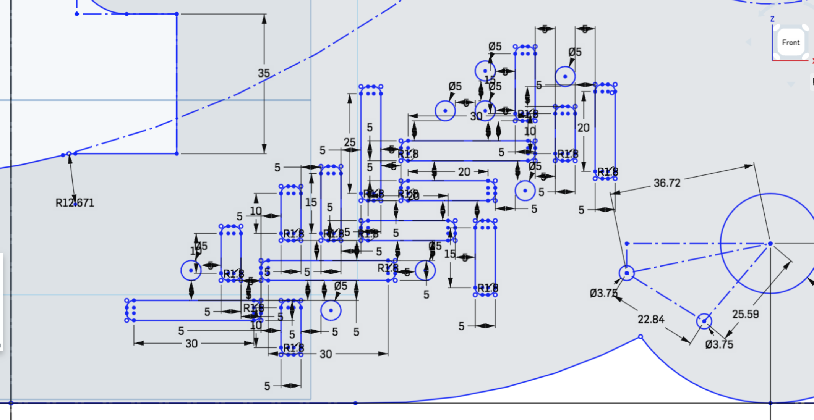
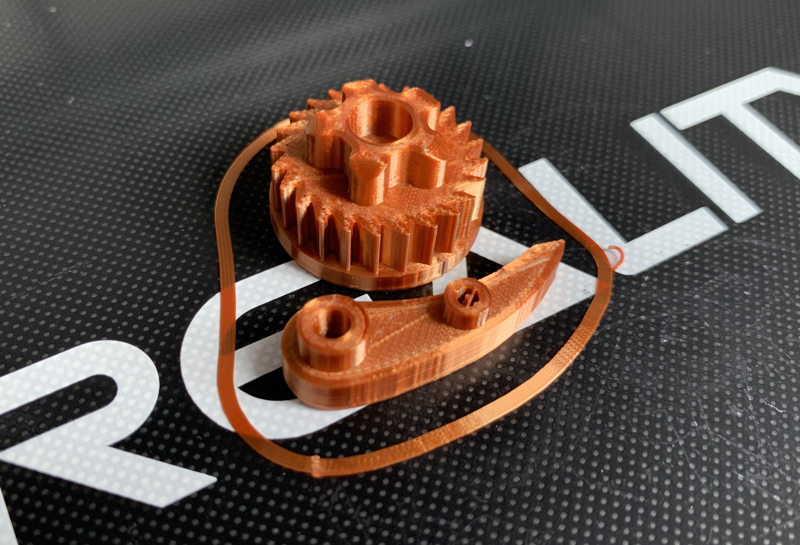

A8: Final Project: Rigid Heddle Loom
by Kellie Dunn for HCDE 598
For the final project, I designed and built a rigid heddle loom.

I liked the idea of using modern fabrication tools to create an ancient fabrication tool!

I am a beginner at weaving, but I have a deep history creating and working with textiles and soft goods, so it's a medium that appeals to me.

Designing the Loom Frame and Shuttle
I researched styles of rigid heddle looms and based my design on existing ideas. I took a lot of inspiration and information from this laser cut loom instructable by TheInterlaceProject, but I wanted to make something that also looked beautiful, not just utilitarian. I decided to draw my own frame based on the basic shapes I saw in the research, changing some parts of the design, simplifying some of the pieces into shapes I found more elegant, and incorporating affordances for some custom hardware that I could create on a 3D printer in addition to stock parts from the hardware store.I modeled the loom frame in Onshape, and made an assembly of the parts, incorporating some stock parts I found CAD versions of on McMaster-Carr.


I added some embellishment in the form of a weaving-inspired cutout motif, just for fun.

I designed the shuttle as a simple, flat rounded bar with notches in each end for winding the weft yarn, long enough to be able to pass through a 30cm shed but not so long that it becomes awkward. The shuttle stands alone as a part, not connected to anything else, so it was the easiest piece of this project to create.
Designing the Ratchet Mechanism
For the ratchet and pawl mechanisms, I borrowed a CAD file that someone else created of a basic ratchet gear, and modified it in Onshape to include a base disc underneath and a grippy knob on top. I made my own pawl arm piece that would accommodate a small extension spring and two fasteners.I bought some metallic copper colored PLA filament because I thought it would look cool with the wood tones, and 3D printed a test of my ratchet and pawl.

I assembled the mechanism on a piece of cardboard to test it and figure out where I needed to set the holes for the fasteners in my frame. I made a few adjustments to the pieces (bigger base, taller knob, adjusted the lengths of the base cylinders on the pawl) and then 3D printed 4 of them (two with clockwise motion and two with counterclockwise motion.)

It makes a really satisfying clicking sound that I captured in the video below!
Designing the Heddle

I created the heddle reed pieces parametrically in Rhino/Grasshopper, so that I can resize the file to any ratio of dents per inch (or, in this case, dents per 10cm, since I made all of my pieces metric). My loom accommodates a 30cm wide heddle, which I designed in 3 separate pieces that are sandwiched between top and bottom bars, fastened with some stock parts.
This is my parametric setup in Grasshopper:
And here is what it looks like with all 3 sections "baked" at the 20/10 setting:
Here is a screen capture of what it does when you resize the dent ratio:
I decided to fabricate 20/10 and 30/10 heddles to start with, but because I have the parametric model, I could cut new ones of different sizes at any point in the future if I wanted them.
Stock Parts
Once I sorted out what I needed in terms of fasteners and hardware, I went to Stoneway Hardware and found what I needed in brass, because I thought it would look nicer with the copper PLA and the wood. I opted for acorn nuts on the heddle pieces because they would keep the ends of the screws from snagging on the yarns.
Once I had all of the parts in hand, I checked the dimensions of them with calipers to make sure the holes in my models were correctly sized.
A list of the stock parts used in this project is in the Bill of Materials at the end of this document.
Cutting the Parts
The frame of the loom, the top and bottom bars on the heddles, and the shuttle are laser cut out of 5mm walnut veneer plywood that I bought from Crosscut Hardwoods. The reed parts of the heddles are laser cut from 3mm birch plywood that I had left over from a previous project. I cut down the dowels with a chop saw in one of the shops at a theatre I work in, and drilled holes into the ends of the 2 lower dowels so I could attach the ratchet gears with wood screws. The birch plywood and the light colored dowels next to the walnut veneer plywood give my loom a pleasant 2-tone wood effect.I exported all of my pieces to be cut from Onshape and Rhino as DXF files and imported them into Adobe Illustrator. After figuring out how to cut down my large piece of 5mm plywood so that it would fit in the laser cutter bed and still accommodate all of the pieces I needed to get out of it, I arranged my laser cutting layout in Illustrator using artboards the size of my wood pieces. I had enough wood to cut 4 of the frame pieces, to make the frame a little more sturdy, so I put my decorative weaving motif cutout on the outside pieces and left the inside pieces solid to get a recessed look as if it had been milled. In Illustrator, I also added rastered labels to my heddle sections to identify them by their dent ratios.

I used blue painters tape on both sides of the plywood to prevent scorch marks from the laser cutter.

Here is a laser cutting montage video with bonus satisfying tape peels at the end!
On the laser cutter, I used the following settings:
For the 5mm walnut plywood: speed 3, power 100, freq 50
For the 3mm birch plywood: speed 8, power 100, freq 50
Assembling the Loom
I glued the 2-layer frame pieces together with regular old wood glue.I used the dowels to line them up, and got some help from The Bard keeping them flat while they dried.

I also double-layered the shuttle pieces, to make them feel a little more sturdy and nicer to hold. I glued the top dowels in and finished all of the wood parts with paste wax, then fastened the ratchet and pawl mechanisms. The heddle sections are sandwiched in between the top and bottom heddle bars with fasteners only, no glue, so that they could be swapped out for different sizes in the future.

Finally, I added the apron bars with nylon cord and brass tacks, following the directions on the instructables tutorial I referenced above.

Warping the Loom and Weaving On It!
It turns out, setting the warp strings on a loom you just built is the most thorough way to find out everything that's wrong with how you built it. If you are new to warping looms (like I am) I highly recommend learning this on a loom built by someone else who knows what they're doing...! I found all of the problems! The structure wasn't strong or stable enough -- it needs more solid attachments for the upper dowels, and another support beam in the bottom middle to keep it from skewing under tension. The ratcheting dowels didn't turn as smoothly as they should once the apron rods got wrapped around them, because the screws for the springs were in the way -- I reversed the screws so that they were flat on the inside of the frame and that at least solved this problem. The loom needs a bottom section that can be clamped to a table, and this could be combined with the support beam that it needs for stability... Warping this loom took way longer than I expected and it was pretty frustrating, but it was certainly instructive.
Ultimately, I was able to get it all together and functioning.

The heddle design also needs some improvement. The heights aren't quite right relative to the loom frame. It does work if you tilt it rather than moving it completely perpendicular to the table for the low position, but it could be easier to use if this was corrected. There are a few different ways to solve this problem, and the simplest might be to shorten the width of the side tabs on the heddle bars, and add some brackets to the inside of the loom frame so that the heddle can move lower inside the frame. I now understand why some of the ones I saw in my research are designed that way. I would also like to redesign the shuttle with pointier ends, and with the cutouts for winding the yarn on one side, so that it's easier to pass it through the shed. Future plans!
Bill of Materials
Stock parts:(10 per heddle + 4 for pawls) machine screw 6-32 x 3/4"
(4 for pawls) machine screw 6-32 x 1 1/4"
(4 for pawl springs) machine screw 3-48 x 1/2"
(8 for pawls and springs) hex m/s nuts 6-32
(10 per heddle) acorn nuts 6-32
(4 for springs) acorn nuts 4-40
(4 for ratchets) wood screw 6 x 1"
(4) extension springs 3/16 X 7/8 X .017
(6 for apron bars) flat headed thumb tacks
Plywood:
(2 pieces, each 32"x12") - 5mm walnut veneer plywood
(1 piece, 24"x12")- 3mm birch plywood
Other:
PLA filament for 3D printed parts
Nylon cord for attaching apron bars
Wood glue
Paste wax for finishing
Yarn, fabric strips, and paper strips for warping and using the loom.
Files:
Onshape loom frame file linkOnshape ratchet & pawl file link
Illustrator cut layout file
Zip of ratchet & pawl .stl files for 3d printing
Zip of .dxf files for all laser cut pieces
Grasshopper parametric heddle file